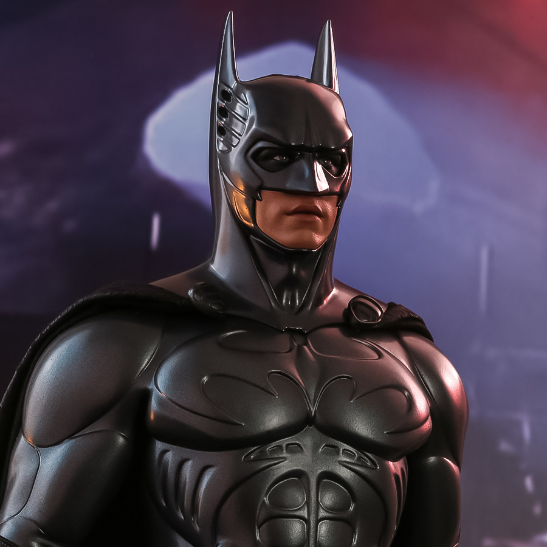

Resume
My Resume

Objective Statement
- Your anger gives you great power. But if you Iet it, it will destroy you as it almost did me.
Education
- Your anger gives you great power. But if you Iet it, it will destroy you as it almost did me.
- Gotham University
- January 1, 2000 - December 15, 2005
Work Experience
- Im Batman
- ABC Corporation
- January 1, 2010 - December 31, 2015
- Members of the League of Shadows
- March 10, 2018 - December 31, 2019
Skills
- adopted the dark
- learned the fear before a crime
- Thrill of success
Accomplishments
- saved the city of Gotham from the crime syndicate
- won the Nobel Peace Prize in 2020
- helped the city of Metropolis recover from a natural disaster
Check out my hobbies
Contact me